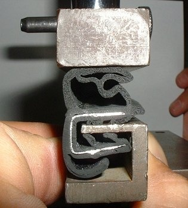
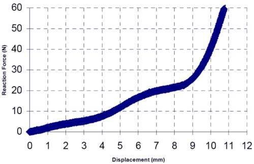
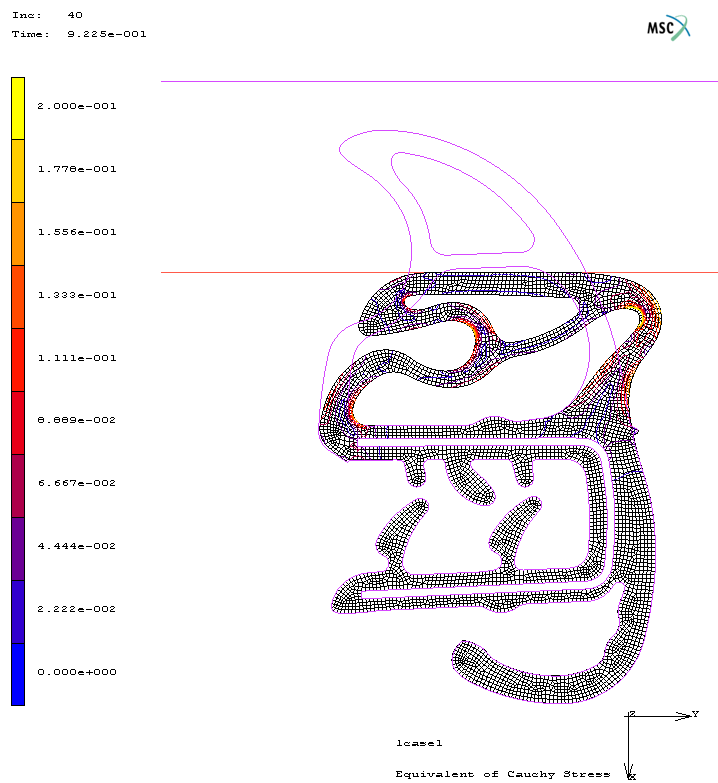
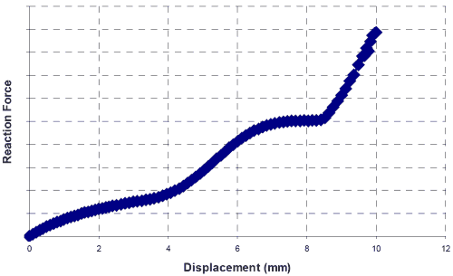

|
Dr. Tuncay Yüksel
FEA Uygulama Sorumlusu
Ürün Geliþtirme Müdürlüðü
Standard Profil A.Þ.
Düzce, Ekim 2005
Not: Ýlk defa TurkCADCAM.net
Dergisi Ocak-Þubat 2006 Sayýsýnda yer almýþ bu yazý, yüksek çözünürlüklü resimlerle birlikte Eylül 2008'de TurkCADCAM.net portalýndan yayýnlanmaya baþlamýþtýr.
Anahtar Kelimeler: Lineer olmayan Sonlu Elemanlar Analizi, Kauçuk Elastisitesi, Temas Mekaniði.
Özet
Bu çalýþmada, Otomobil gövde sýzdýrmazlýk elemaný tasarýmýnda Sonlu Elemanlar Analiz (Finite Element Analysis- FEA) Yönteminin kullanýmý örnek çalýþmalarla anlatýlmaya çalýþýlmýþtýr. Otomobil gövde sýzdýrmazlýk elemanlarý araç sürüþ konforu açýsýndan, özellikle araç içi ses seviyesini etkileyen en önemli parçalardan birisidir. Tasarým sürecinde lineer olmayan sonlu elemanlar tekniðinden yaralanýlmasý, yüksek performans beklenen bu parçalarýn, hem teknik açýdan daha etkili hem de ekonomik açýdan oldukça verimli üretimini saðlamaktadýr. Makalede, tasarým sürecinde kullanýlan FEA modelleri ve problem tipleri hakkýnda bilgiler örnekler ile verilmeye çalýþýlmýþtýr.
1. Giriþ
Otomobil gövde sýzdýrmazlýk elamanlarý, gövde-kapý, kapý-cam, gövde-bagaj, arasýndaki boþluklarý (hareketli veya sabit) doldurarak, araç içine yaðmur, ses, toz giriþlerini engellemektir. Bu görevlerinin yanýnda önemli olan diðer bir fonksiyonu da, çalýþtýðý bölgelerde, aracýn üretim toleranslarýndan kaynaklan hatalarýný gidermektir.
Otomobil gövde sýzdýrmazlýk elemanlarý iki ana gruba ayrýlabilir; kapý bazlý ve gövde bazlý olmak üzere. Gövde bazlý fitillere kapý fitili, bagaj fitili, motor kaput fitili, yaðmur oluklarý, kapý bazlý fitillere ise cam-kanal fitilleri, iç ve dýþ sýyýcýlar örnek olarak gösterilebilir. Günümüzde araç konforunun giderek önem kazanmasýyla birlikte, otomobil gövde sýzdýrmazlýk elemanlarýndan beklenen performans; teknik, görsel, çevre vb. þartlarý açýsýndan, artmaktadýr. Bu beklentiler, doðal olarak tasarým süreçlerinde modern tekniklerin kullanýmýný zorunlu kýlmaktadýr. Sonlu elamanlar yönteminin bu süreçte kullanýlmasý, tasarýmcýlarýn iþini oldukça kolaylaþtýrmaktadýr. Özellikle de son dönemlerde Lineer olmayan Sonlu Elemanlar konusundaki geliþmeler yöntemin bu alanda etkin bir þekilde kullanýmýný saðlamýþtýr. Yapýsal olarak incelendiðinde fitiller; sünger ve yoðun kauçuk yapýlarýn çeþitli þekillerde birlikte kullanýlmasýndan ve bazý uygulamalarda da çelik insert ilavesinden oluþmaktadýr.
2. FEA yöntemi kullanýlarak fitil tasarýmý
Otomobil gövde sýzdýrmazlýk elemanlarýndan beklenen temel tasarým kriterleri, düþük kapama kuvvetleri, geniþ baský yüzeyi, kolay montaj, zor demontaj ve dayanýklýlýk olarak sýralanabilir. Bu ana prensipler doðrultusunda Sonlu Elemanlar Analiz yönteminden her aþamada yararlanmak mümkündür.
Genel olarak:
- 2 Boyutlu (Düzlem Gerilme) Modeller;
- Baský kuvvetlerinin incelenmesi
- Baský altýnda fitil formlarýnýn çalýþma mekanizmalarýnýn karþýlaþtýrmasý
- Takma, çýkartma kuvvetlerinin incelenmesi
- 3 Boyutlu Modeller;
kullanýlarak ürün tasarlanmaya çalýþýlýr.
Önemli olan diðer bir konu ise, kauçuk malzemeler için uygun malzeme parametrelerinin belirlenmesidir. Kauçuk malzemelerin malzeme modelini oluþturmak için genel olarak, baþta tek eksenli çekme deneyi, basit kayma ve eþ iki eksenli deneysel verilere ihtiyaç duyulur.
2.1. Baský kuvvetlerinin incelenmesi
Kapý kapama kuvvetinin optimizasyonu, konfor açýsýndan önemli parametrelerden birisidir. Þekil 1' de kapama kuvvetinin Sonlu elemanlar analiz yöntemi ile belirlenmesi için yapýlan deneysel ve sayýsal çalýþma sonuçlarý görülmektedir. Görüleceði gibi, FEA sonuçlarý deneysel sonuçlarla oldukça uyumludur.

Þekil 1-a) Deneysel Çalýþma


Þekil 1-b) Sayýsal Sonuçlarý

Þekil 1. Kapý kapama kuvvetinin belirlenmesi için yapýlan deneysel ve sayýsal çalýþmalarýn sonuçlarýnýn karþýlaþtýrýlmasý
|